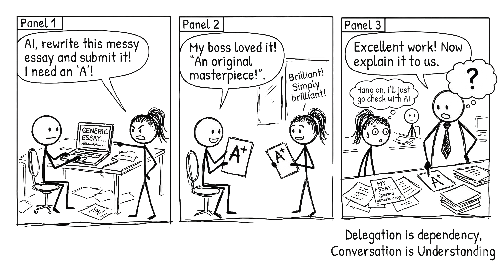

3 The Delegation Trap

A single prompt gives you a single answer. A conversation gives you understanding.
3.1 The Default Setting
Most people, when they first sit down with an AI, ask it to do something for them.
Write this email. summarise this article. Draft this report. Generate this code.
This is natural. It is also a trap.
Not because the outputs are bad. They are often good. Sometimes excellent. That is precisely what makes delegation so dangerous. When the output looks right, you stop thinking about whether it is right. You stop thinking altogether.
Delegation feels productive. You hand off a task, you get a result, you move on to the next thing. Your to-do list shrinks. Your throughput increases. And somewhere in the process, quietly, your capacity to do the work yourself begins to erode.
This is the delegation trap: the more you outsource your thinking, the less you are able to think.
3.2 Two Mindsets
There are two fundamentally different ways to approach AI.
The delegation mindset asks: “How do I get AI to do this for me?”
The conversation mindset asks: “How do I use AI to think better with me?”
These sound similar. They are not. They lead to completely different outcomes, and over time, they produce completely different people.
| Delegation Mindset | Conversation Mindset | |
|---|---|---|
| What you ask | “Write me a marketing plan.” | “What are the weaknesses in my marketing plan?” |
| What you get | A finished artifact | A sharper understanding of your own strategy |
| What you lose | The thinking that would have made the plan yours | Nothing. You gain capability you did not have before. |
| What you ask | “summarise this research paper.” | “What are the three strongest objections to this paper’s methodology?” |
| What you get | A paragraph you could have written in ten minutes | A critical lens you might not have developed for years |
| What you lose | The act of reading closely | Nothing. You read more carefully, not less. |
| What you ask | “Generate a lesson plan for this topic.” | “Here is my lesson plan. Where will students get stuck?” |
| What you get | Something generic that fits no classroom | Insight specific to your students, your context, your goals |
| What you lose | Your pedagogical judgment | Nothing. Your judgment gets sharper. |
The pattern is consistent. Delegation gets you an output. Conversation gets you understanding. And understanding compounds in ways that outputs never will.
3.3 The Judgment Problem
Here is the line you need to sit with:
Judgement cannot be delegated to a system that has no stake in the outcome.
An AI has processed more text than any human being will ever encounter. It can retrieve, recombine, and rephrase with extraordinary fluency. But it has never made a decision under pressure. It has never felt the weight of getting something wrong. It has never had a stake in the outcome.
This matters because judgement is not pattern matching. Judgement is knowing which pattern applies here, now, given everything you know about this situation that cannot be written down. It is the product of experience, consequence, and reflection. It cannot be downloaded. It cannot be generated. It can only be built.
When you delegate a task to AI and accept the result without interrogation, you are not exercising judgement. You are abdicating it. And every time you abdicate it, the muscle weakens.
When you converse with AI, pushing back on its suggestions, asking it to defend its reasoning, using it to stress-test your own conclusions, you are exercising judgement. You are building the muscle, not letting it atrophy.
3.4 Process Over Product
There is a seductive metric in the delegation world: output volume. How many blog posts did you produce? How many emails did you draft? How many reports did you generate?
This metric is a mirage.
The people who will thrive alongside AI are not the ones who produce the most. They are the ones who obsess over process.
Process means asking: how did I arrive at this conclusion? What assumptions am I making? What have I not considered? What would change my mind?
Product means asking: is it done yet?
Those who obsess over process will always outperform those who collect outputs. Always. Because process builds capability, and capability is what you carry forward into every future problem. Outputs just sit in folders.
Consider two professionals, both using AI daily.
The first uses AI to generate deliverables. Reports, proposals, analyses. They are prolific. Their work is polished. Their clients are satisfied. But strip away the AI, and what remains? Someone who has practiced accepting, not thinking.
The second uses AI to challenge their own reasoning. They draft something first, then ask the AI to find the holes. They use it to explore alternatives they had not considered. They argue with it. They are slower. Their output volume is lower. But every interaction has made them sharper. Strip away the AI, and what remains? Someone who is better at their job than they were six months ago.
The first professional is dependent. The second is augmented.
This is not a subtle distinction. It is the difference between using a tool and being used by one.
3.5 The Comfortable Lie
There is a story people tell themselves: “I am saving time on the routine stuff so I can focus on the important stuff.”
Sometimes this is true. Genuine cognitive offloading, where you hand off low-stakes mechanical tasks to free up attention for high-stakes creative ones, is real and valuable. We will discuss it properly in a later chapter.
But be honest with yourself. How often is the “important stuff” just more delegation? How often does “saving time” mean “avoiding thought”?
The comfortable lie is that delegation is efficiency. Sometimes it is. Often, it is avoidance dressed up as productivity.
The test is simple: after using AI on a task, do you understand the problem better than you did before? If yes, you were conversing. If no, you were delegating. And if you cannot tell the difference, that should worry you.
After using AI on a task, do you understand the problem better than before? If yes, you were conversing. If no, you were delegating. If you cannot tell the difference, that should worry you.
Next time you use AI, do not accept the first response. Reply with “What did you assume?” or “What is the weakest part of this?” and see how the output improves. That second exchange is the conversation starting. The first response was just the opening.
3.6 What This Book Is Really About
This is not a book about getting more from AI. It is a book about getting more from yourself, with AI as the catalyst.
The goal is not to get AI to do your work. It is to become more capable yourself, with AI as your thinking partner.
Every technique in the chapters that follow serves this principle. Not “how to get better outputs” but “how to think better in the process of working with AI.” The output is a byproduct. The thinking is the point.
A clarification worth making: not all delegation is a trap. Asking AI to reformat a table, convert units, or fix punctuation is delegation, and it is fine. You are not losing capability you need to build. The trap is delegating the thinking: the analysis, the judgement, the decisions that are your actual job. The test is always the same: does this task require my expertise, or is it mechanical? Delegate the mechanical. Converse on everything else.
If you remember nothing else from this chapter, remember the table. Look at which column you spend most of your time in. Then decide which column you want to live in.
The delegation trap is comfortable. The conversation path is harder. But only one of them makes you better.
Choose accordingly.